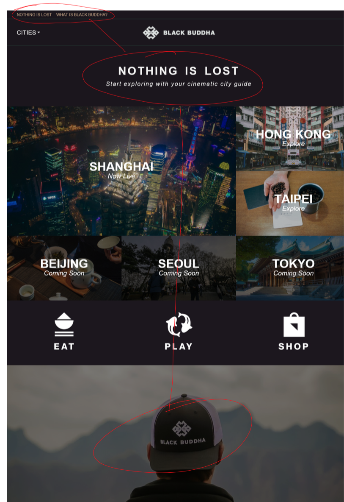

Navigation System - Current State
For the first part of this project, I will focus on optimizing the site navigation – focusing on the way a first time user might encounter the site knowing little about it, what one can do on it, and how they might discover all it has to offer. The current homepage looks like this:

This is how it looks like on a mobile phone:

Overall, this is a great first start, where content is clearly the star (as it should be with this service) and where the brand is clearly established in visual tone.
One of the first things I noticed, however, was some redundancy of messaging and unexpected location of certain content, as desribed and shown below:
- The slogan "NOTHING IS LOST" was repeated twice
- The "What is black buddha?" and "Learn More" links could be consolidated
- I expected a hero image setting the tone for the brand to be combined with the headline up top
- The introductory bar at the top, while helpful for new users, unnecessarily clutters real estate that should be reserved for branding and functional navigation only
- I expected to be able to click on "EAT" "PLAY" and "SHOP" as they look like features of the service, and are of similar weight to the cities above them

Additionally, visually the page is missing some contrast to differentiate important, actionable content from ambient imagery. While I understand the purpose of the dark color palette is to align with the brand's premium look-and-feel, uber's website is a good example of one that utilizes dark, premium branding while still adopting the best practice of light backgrounds for important, actionable content.

Note the contrast between different sections, and the use of light background to make actionable content stand out (the features below the hero image)
Navigationally, the content structure is mostly as expected.
- At the top level of the homepage, we can navigate to city pages and the about page. Globally, we can change the language and access the user menu.
- Once of the city level, we can still navigate to other cities, and the hero content here is the city intro video. Below that are the individual listings within the city, shown in a default "all" category filter, and in a default grid view with options to narrow the category or to toggle map view.
- On the listing level –the core of the site's value– the hero content is the listing video, with location and further information below, then a listing photo gallery, and lasty discovery navigation encourage browsing of related listings.
- The one core issue at the listing level is that video actions take the place of global city navigation, inconsistent from the homepage and city level navigation bar: these actions are more expected with the video player controls, and the nav bar should be globally consistent.
One last usability issue is the way content tiles are accessed:
As you can see from the screen capture, this is a little awkward for both desktop and touchscreen users:
- On desktop, the rollover seems to indicate I can click anywhere on the tile to access the next page (normal expectation). However, I must roll over the center of the content to reveal a secondary button state to actually take me there.
- On mobile, a tap of the tile toggles the secondary state, after which I must tap the tile again to navigate to the destination.
- Friction can be removed by implementing the standard, user-expected behavior of one-click to navigate
Design Approach
I propose to improve the first time experience of new users, and also ease access of content for returning users, by harmonizing the homepage design, making the global navigation consistent, and increasing content contrast on pages to add clarity.
Below is a wireframe of the harmonized homepage I envision:
Some notes about this concept:
- Since Black Buddha's key differentiator is high-production video for curated listings, consider having an ambient homepage hero image (like Airbnb) rather than just a static photo.
- Consider introducing Black Buddhe via the "What is Black Buddha?" by playing the introductory video on the about page in a modal. Users could still access the full about page from the footer.
- Add more content around the "EAT" "PLAY" and "SHOP" categories explaining how these Black Buddha listings are different than other sites. This could be as simple as adding sub-copy, or as detailed as deploying modal content showcasing the differentation.
Solution Mockups
Updated Homepage